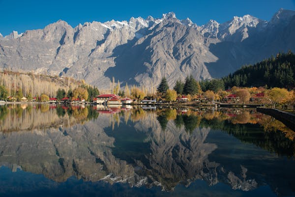

About US
Gilgit Baltistan is the capital of tourism in Pakistan. Gilgit Baltistan is home to some of the highest peaks in the world, including K2 the second highest peak in the world. Gilgit Baltistan's landscape includes mountains, lakes, glaciers and valleys. Gilgit Baltistan is not only known for its mountains